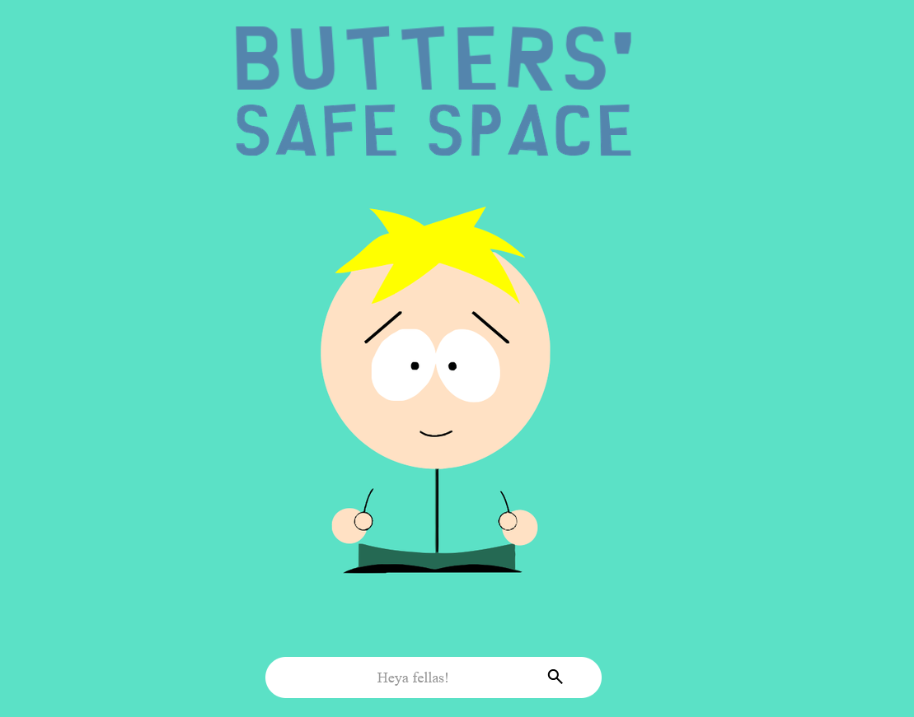
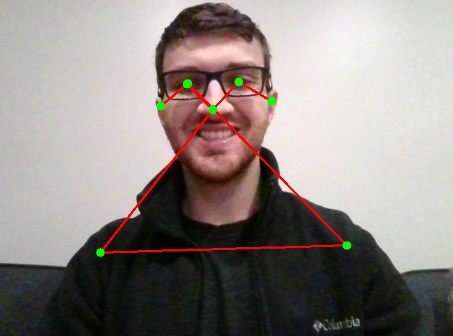
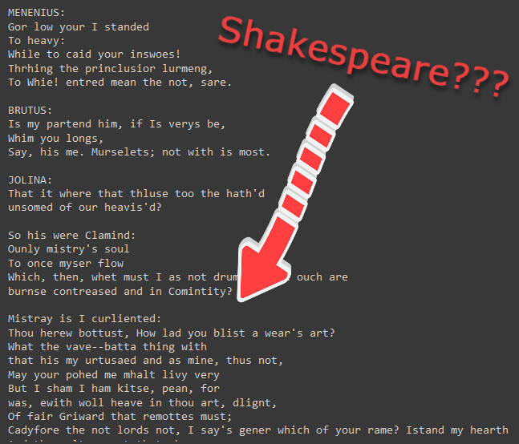
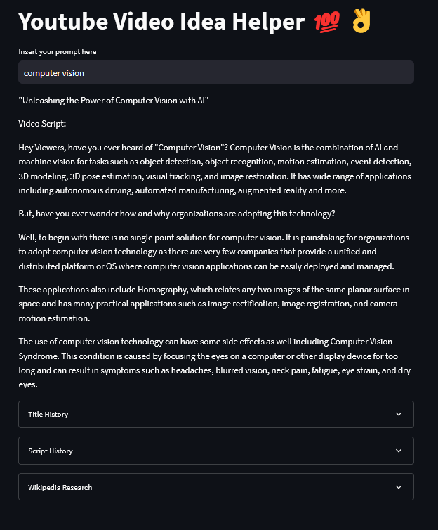
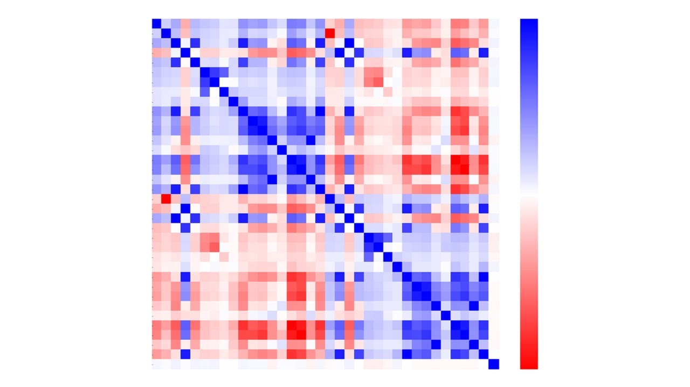
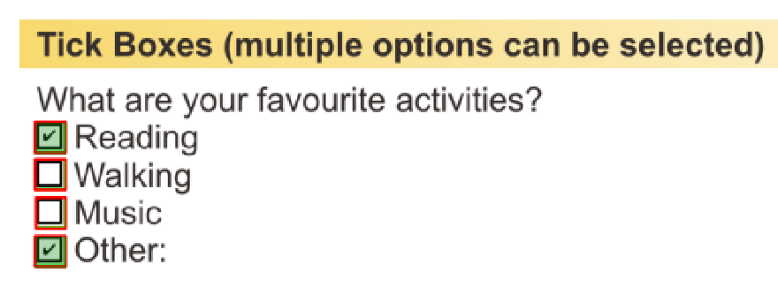
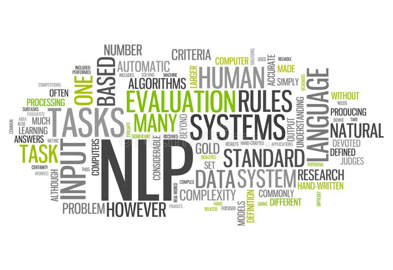
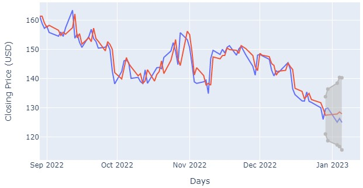

Technology Used: Python, Django, HTML/CSS, NLP (Vader, Tensorflow, HuggingFace), Web Scraping, Plotly, Pandas
Results: Django web application that scrapes YouTube comments off of user specified videos and returns only the comments with positive sentiment.
Github Link

Technology Used: Computer Vision, Tensorflow Hub Movenet, 3D Keypoint Extraction, Stereo Vision, Distance Triangulation
Results: Realtime 3D coordinates of human pose from camera coordinates
Github Link
Mini-GPT to Generate Shakespeare

Technology Used: Python, LLMs, PyTorch, Google Colab
Results: A LLM that emulates the structure of the total works of Shakespeare.
Github Link
Implementing a GPT to Generate YouTube Ideas

Technology Used: OpenAI GPT, LLMs Langchain, Streamlit, Python, APIs
Results: A webpage built using streamlit that allows a user to input a prompt and outputs a YouTube title and script based off of user input using LLMs.
Github Link
Multivariate Analysis: League of Legends

Technology Used: Logistic Regression, L1 Penalty, ROC Curve, Jupyter, Pandas, sklearn, Plotly, Data Cleaning
Results: Games are won primarily through objectives in the bottom lane and securing Baron Nashor
Github Link
Checkbox Detection from PDF Files

Technology Used: Python, OpenCV, Pandas/Numpy, pdfplumber/fitz, Jupyter
Results: Detected checkboxes coordinates (distingushing filled and unfilled).
Github Link
Technology Used: JSON, t-test, ANOVA, Logistic Regression, Jupyter, Pandas, Data Cleaning, sklearn
Results: Trainees that fail to view the propeller hotspot are statistically significantly more likely to fail the multiple choice question
Github Link
Sentiment Analysis
NLP | Deep Learning

Technology Used: Natural Language Processing, Tensorflow, Keras, Tokenization, Padding, JSON, Plotly, Data Cleaning
Results: A Tensorflow Model was created that is able to predict Amazon Review sentiment with 86% accuracy
Customer Churn
Tableau | SQL

Technology Used: Tableau, Postgres SQL, Interactive Dashboards, KPIs
Results: An interactive Tableau Dashboard that lets stakeholders view KPIs relevant to customer churn
Tableau Link
Stock Forecasting:
Time Series Analysis

Technology Used: ARIMA, Seasonal-trend Decomposition, Power Spectrum Density, APIs
Results: A program that forecasts closing stock prices based off of an ARIMA model with less than 20% MAPE
Github Link